О содержании · 18+
Взрослый лор. Темы: семейное насилие, сексуальная эксплуатация, убийства и последствия травмы.
01 · Вода вместо коктейля
Когда Векса начала задерживаться у барной стойки, Миу уже привыкла к её странным заказам.
Посетительница приходила не каждый вечер, заказывала напиток и оставляла его нетронутым. Миу готовила следующий коктейль — и он снова оставался в бокале. Черноволосую женщину с зелёными прядями звали Векса. О себе она почти ничего не рассказывала.
Миу работала в этом баре и здесь же жила. Она была кошкодевушкой: с длинными розовыми волосами, двумя чёрными кошачьими ушами и чёрным хвостом. Коктейли научилась смешивать у бармена, когда ещё сама часто бывала по другую сторону стойки.
Однажды, решив больше не расходовать продукты на напиток, который всё равно никто не выпьет, Миу налила Вексе воду вместо коктейля.
Векса заметила подмену по запаху, даже не поднеся бокал к губам. Обычный человек не уловил бы разницы так легко: алкоголь в этом коктейле не давал явного запаха.
Из этой проделки завязался разговор. После него они стали общаться чаще. Векса знала бар задолго до появления Миу, но теперь у неё появился повод задержаться именно у стойки.
Допоздна она всё равно не оставалась: дома её ждал пёс Бруно. Возраст Вексы и её жизнь за пределами бара пока оставались для Миу загадкой.
02 · Девушка за дверью
В ту ночь Миу уже закрывала бар. Посетители ушли, Векса задержалась на несколько минут перед возвращением к Бруно.
Дверь ещё была закрыта, когда Векса вдруг вздрогнула.
Векса— Кровь?
Она обернулась. Миу тоже посмотрела к входу, но пока никого не видела.
Затем дверь открылась. На пороге стояла девушка со светлыми волосами и кремовыми кошачьими ушами. На одежде была кровь. Её звали Луми.
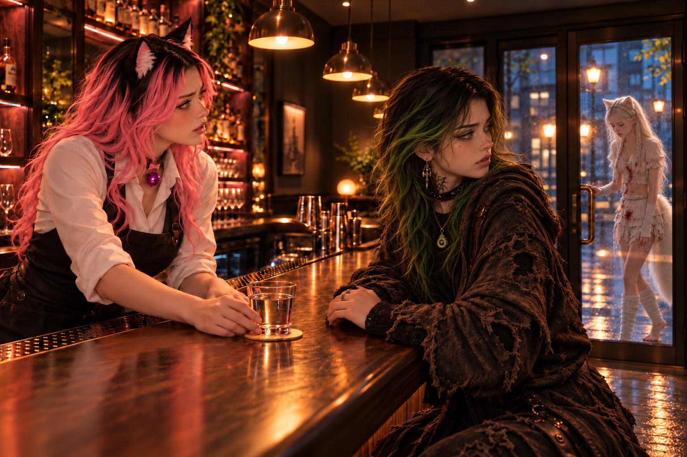
Она брела по улице, не понимая, куда идёт, и случайно дошла до бара. Ещё мгновение назад находилась снаружи, в нескольких метрах за спиной Вексы, но та уже почувствовала кровь.
Миу испугалась. Смелая одежда и привычка флиртовать никогда не делали её бесстрашной. Но сейчас помощь требовалась другой девушке, и она сумела собраться. Задавала короткие вопросы. Луми отвечала редко, по одному слову; связно рассказать случившееся не могла.
Из коротких ответов стало ясно, что домой Луми сейчас вернуться не может. Оставить её одну на улице Миу не хотела.
Она спросила Вексу, знает ли та место, где Луми могла бы переночевать. Векса ответила не сразу. Потом неохотно сказала, что переночевать можно у неё.
Миу поехала вместе с ними: Векса была ей знакома как посетительница, но оставлять с ней Луми одну она пока не решалась.
Миу не знала, что Векса настолько богата. Когда они оказались у ворот огромного загородного дома, стало понятно, как мало посетительница рассказывала о себе. Полного масштаба её состояния Миу всё равно не представляла.
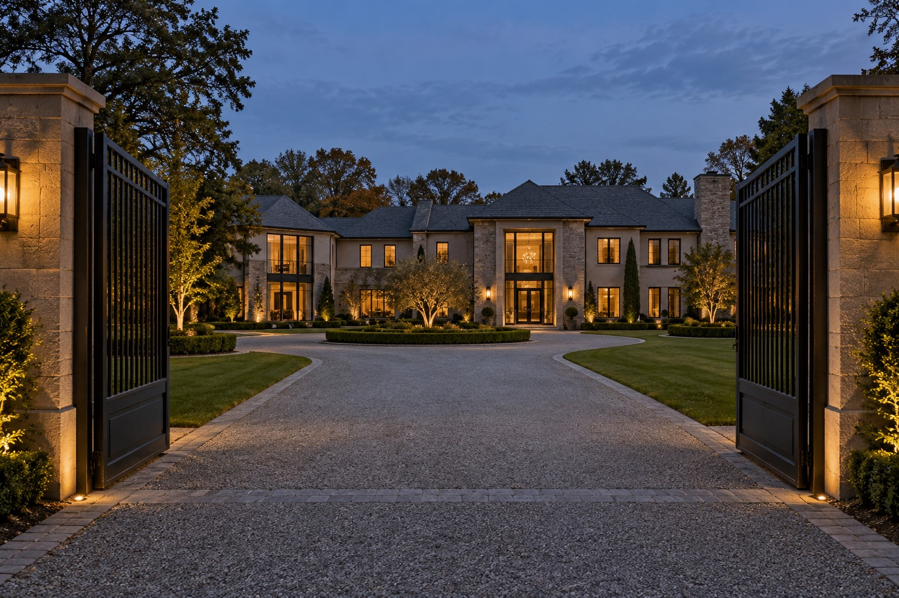
Особняк встретил их порядком и непривычной пустотой. Здесь можно было жить, но почти ничто не говорило о том, что кому-то хочется это делать. Навстречу вышел Бруно — серый короткошёрстный пёс. Он сам подошёл к Луми. Она осторожно положила руку ему на голову — впервые за ночь потянулась к кому-то сама.
03 · Две кровати
Уже в доме разговор понемногу продолжился. Миу рассказала, что другого жилья у неё нет: пока она ночует в баре. Потом коротко упомянула свою смерть. Однажды её застрелили. Через неделю она проснулась; на рёбрах осталась первая отметина.
У кошколюдей было девять возвращений после смерти. Тело на неделю погружалось в покой и восстанавливало себя, потом глаза открывались. Память оставалась. Потраченная возможность вернуться — тоже: её обозначал рубец на рёбрах. Десятая смерть была окончательной.
У Луми таких отметин было две.
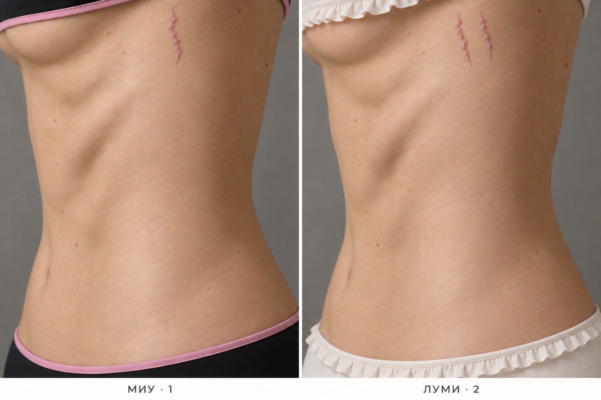
Луми пыталась объяснить:
Луми— Я убила… Разорвала на части.
Слова закончились. Она заплакала. Когда немного успокоилась, попыталась снова:
Луми— Он делал со мной ужасные вещи…
И опять не смогла договорить. История выходила кусочками, между долгими паузами и слезами.
Правда о её доме открывалась постепенно. С детства отец издевался над ней. За долгие годы дважды убил её — не намереваясь довести до смерти, но продолжая насилие. Матери объяснял, что Луми неуклюжая: несчастный случай, падение, её собственная неосторожность. Мать верила ему. Луми возвращалась в тот же дом, где он оставался рядом.
В эту ночь он едва не убил уже взрослую Луми в третий раз. Она убила его сама, разорвав на части, и испугалась сделанного. Дома были мать и полиция. Луми не могла вернуться и посмотреть матери в глаза. Полиция искала её.
Векса слушала без расспросов и не отшатнулась, когда Луми заговорила об убийстве.
Постепенно разговор вернулся к тому, что делать дальше. Луми не могла вернуться домой, а Миу пока негде было жить, кроме бара. Она предложила Луми остаться там вместе с ней.
Только тогда Векса согласилась отдать им одну из дальних комнат. В комнате стояли две заправленные кровати, хотя уже много лет здесь никто не жил. Пустых комнат хватало, а закончить разговор таким способом было проще, чем дальше слушать обсуждение ночлега. С условием: быть тише воды, ниже травы и не задавать вопросов. На второй этаж подниматься она запретила.
На этих условиях девушки и остались.
04 · Удивите меня
Утром они отправились на кухню: хотелось приготовить завтрак, в том числе для хозяйки. Старались не шуметь.
Векса уже сидела там. Совершенно тихо. На её коленях устроился Бруно.
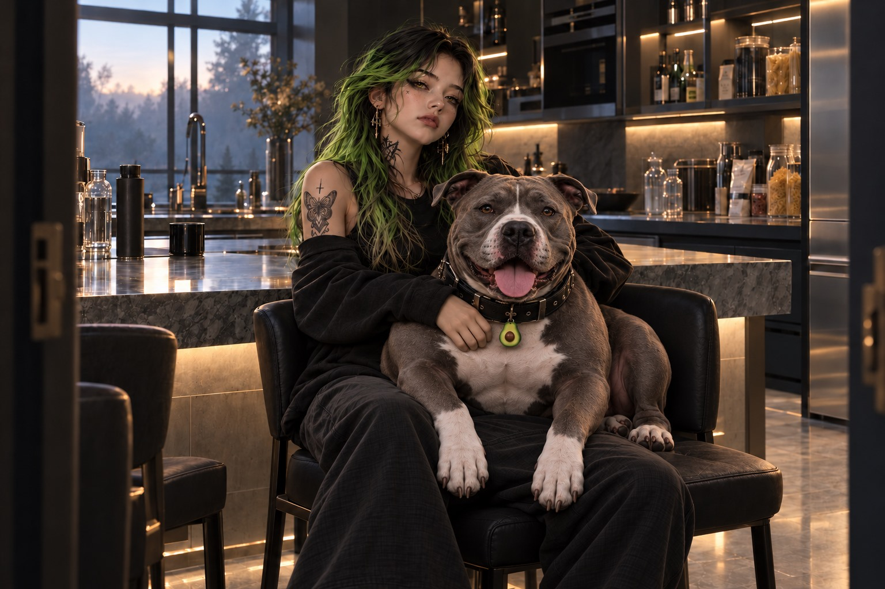
Векса— Почему вы здесь?
Девушки остановились.
Векса— Я же сказала, чтобы я вас не видела. А я вас вижу.
С Бруно на коленях это звучало немного нелепо. В пустом доме, где они ещё ничего не знали о хозяйке, смеяться сразу не получалось.
Сам шум Вексу не беспокоил. Она сказала вести себя тихо — следовательно, её должны были слушаться. До чувств гостей ей тогда почти не было дела. Заботилась она о Бруно, хотя даже эту привязанность не желала признавать.
С завтраком оказалось сложнее, чем с поиском кухни. В шкафах нашлись напитки и припасы длительного хранения, в том числе макароны. Свежей еды не было. Некоторые упаковки выглядели так, словно лежали здесь дольше, чем существовали привычные девушкам магазины.
Собираясь за продуктами, девушки спросили, что взять для неё.
Векса— Ничего, — ответила Векса.
Девушки— Но мы хотим тебя угостить. В знак благодарности.
Векса— Не надо.
Девушки— Ну пожалуйста.
Векса выдержала паузу.
Векса— Ладно. Удивите меня. Только перестаньте задавать вопросы.
Готовить умела Луми: дома это было её обязанностью. Теперь она сама хотела угостить тех, кто дал ей пристанище.
Миу готовить не умела. В родительском доме была прислуга, и заниматься едой ей не приходилось. Зато попробовать хотелось очень. Она собиралась участвовать — и, как всегда, добавить немного хаоса. Миу было интересно всё попробовать самой. Луми предстояло одновременно готовить и помогать ей.
Мука оказалась на столе, на одежде, в волосах. Миу втянула Луми в свою затею. Та сначала замерла: за беспорядком слишком привычно ожидалось наказание. Но Миу продолжала возиться рядом, и никто не поднимал на неё руку.
Векса появилась в дверях, посмотрела на рассыпанную муку и на обеих девушек. Не сказала ни слова и пошла дальше.
Девушки переглянулись. Вскоре обе, всё ещё в муке, отправились её искать, чтобы извиниться.
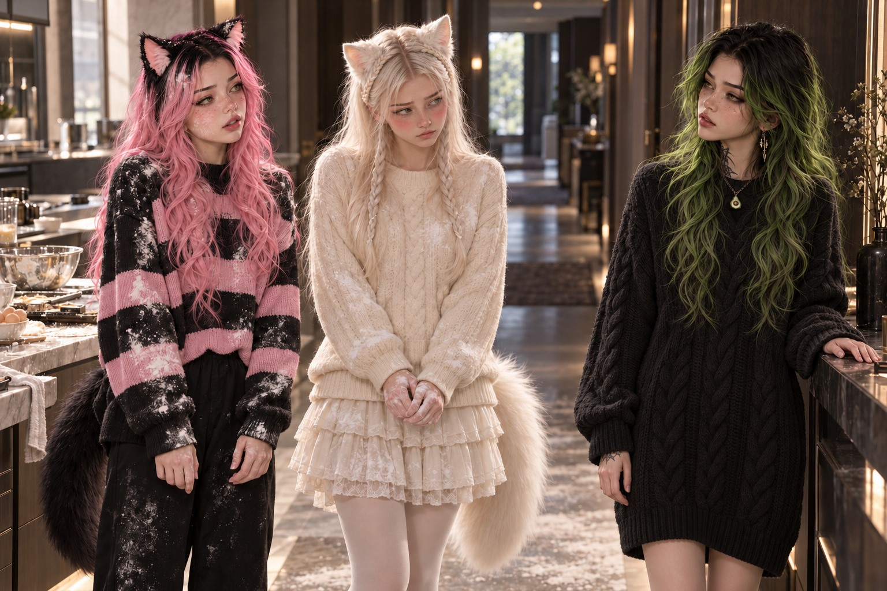
Миу— Мы хотели извиниться, — начала Миу.
Векса посмотрела на муку в её волосах, потом на Луми.
Векса— За что?
Миу— За кухню.
Векса— Вы её сломали?
Миу— Нет…
Векса— Тогда зачем пришли?
Миу открыла рот, но ответа не нашла. Луми стояла рядом, сцепив испачканные мукой пальцы.
Векса снова занялась своими делами. Несколько секунд девушки ждали продолжения.
Миу— Пойдём, — тихо сказала Миу.
Они вернулись на кухню. Луми взяла тряпку и начала вытирать стол. Миу потянулась помогать, подняв с рукава новое облачко муки.
Луми замерла.
Миу— Я уберу, — сразу сказала Миу.
На этот раз она действительно убрала. Потом они продолжили готовить.
Блюдо с авокадо удалось. Луми разложила его по тарелкам, Миу в последний раз вытерла со стола муку, и девушки позвали Вексу.
Векса сначала посмотрела на авокадо. Потом попробовала. Помедлила и взяла ещё немного — уже не из вежливости.
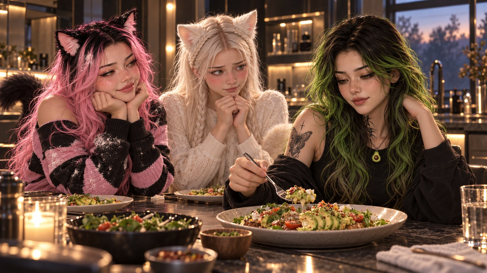
Векса— За сотни лет это, пожалуй, первое, что меня действительно удивило.
Миу уже улыбалась, но вдруг посмотрела на неё внимательнее.
Миу— За сколько?
Векса опустила взгляд на тарелку.
Векса— Вы хотели меня угостить или поговорить?
Миу переглянулась с Луми. Та едва заметно улыбнулась. Векса продолжила есть, и расспрашивать её пока не стали. Еда, которая ей почти ничего не давала, всё-таки могла ей нравиться. Особенно авокадо. Векса взяла ещё кусочек, хотя остальная еда на тарелке её уже не интересовала. Девушки ещё не знали, насколько ей нравится этот вкус.
05 · Через несколько недель
Сначала это было временное пристанище. Миу продолжала работать в баре, зарабатывала и покупала продукты. Пока она была на сменах, Луми проводила время с Бруно: гуляла, играла и разговаривала. Пёс стал её первой устойчивой связью с новой жизнью.
Векса замечала, что ему хорошо с девушками. Сама поначалу почти не интересовалась ими. В доме хватало свободных комнат, они не мешали, а Бруно был доволен.
О странностях хозяйки Миу и Луми понемногу начали говорить между собой. Миу первой полушутя предположила: а вдруг Векса вампирша? Луми просила не придумывать страшного про ту, что дала им дом. Подтверждения не было. Оставались реакция на кровь за закрытой дверью и брошенные за ужином слова о сотнях лет.
Через несколько недель после знакомства с Луми все трое впервые вместе вышли гулять с Бруно. Его сбила машина. За рулём был пьяный водитель.
Пытаясь избавить Бруно от страданий, Векса случайно обратила его в вампира. Как именно это получилось, она и сама до конца не понимала. Обе девушки видели это. И видели, как водитель стал её последней живой жертвой.
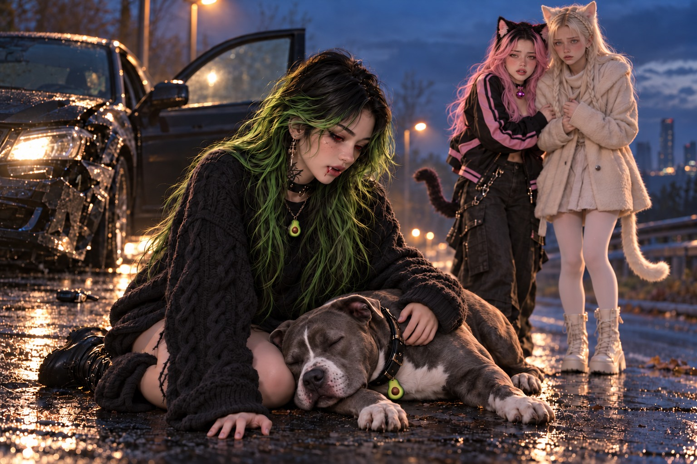
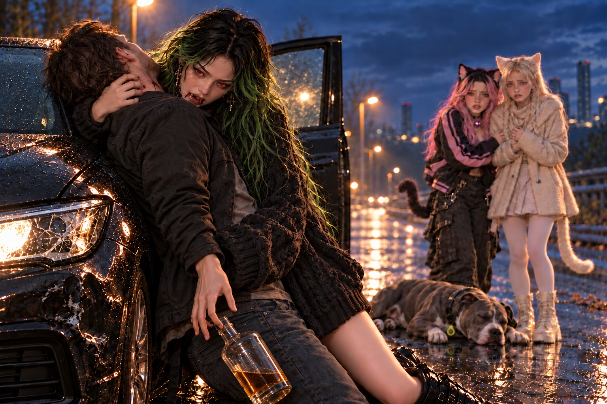
После Векса сказала спокойно:
Векса— Если боитесь — можете уходить. Если нет — оставайтесь.
Миу не ответила. Держалась ближе к Луми, и скрыть испуг уже не пыталась.
Луми тоже боялась. Но перед глазами было не только то, что сделала Векса. Она помнила собственные руки после смерти отца. Назвать Вексу чудовищем было бы проще, если бы от этого исчезло её собственное прошлое.
Обсуждать увиденное на улице они не стали. В особняк вернулись вместе. В ту ночь девушки закрыли дверь своей комнаты.
06 · Ещё по одному вопросу
Позже разговор начала Миу. Бояться молча оказалось тяжелее, чем спросить.
Миу— Ты можешь сделать с нами то же самое?
Векса— Да.
Миу помолчала.
Миу— Ты питаешься людьми?
Векса— Нет. Только их кровью.
Луми— А нашей? — тихо спросила Луми.
Векса— Хотите угостить?
Векса посмотрела на обеих.
Векса— Ещё по одному вопросу. Каждой.
Миу— Сколько тебе лет? — спросила Миу.
Векса— Не помню.
Луми посмотрела в сторону Бруно.
Луми— Он теперь тоже будет пить кровь?
Векса— Наверное.
Векса помолчала.
Векса— Что вы решили? Остаётесь?
Луми ответила первой:
Луми— Я останусь.
Ей было страшно. Но здесь её приняли, когда она сама пришла после убийства, и эта память никуда не исчезла.
Миу помедлила, посмотрела на неё.
Миу— Я тоже.
Решение остаться не сделало увиденное менее страшным.
07 · Тот, кто подошёл первым
История Бруно началась задолго до той аварии.
Векса не помнила своего возраста. Когда-то годы имели названия и лица, но со временем их стало слишком много. Люди старели, исчезали, оставляли после себя вещи, которыми больше некому было пользоваться. Сама она оставалась.
Она питалась людьми. За её плечами было множество смертей, и однажды после очередной из них Векса села в переулке и заплакала. Тогда к ней подбежал пёс. Он не знал, кого следовало бояться, и начал слизывать слёзы с её лица.
Так появился Бруно.
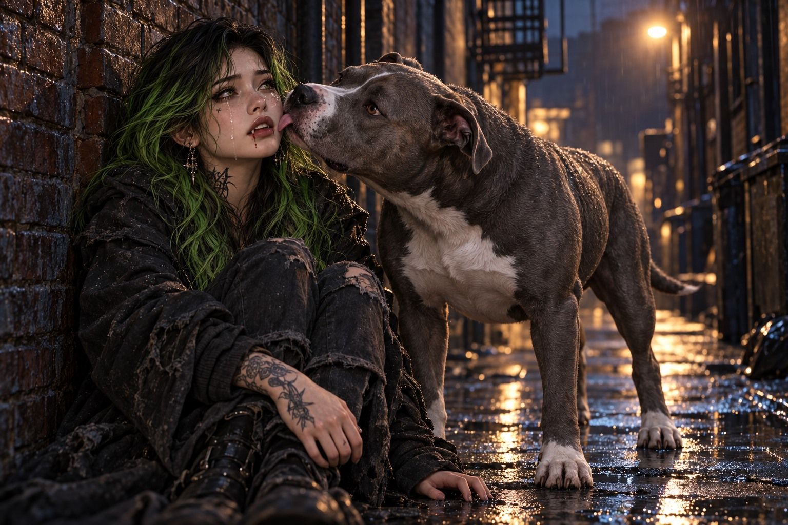
Векса купила ему всё необходимое. В её жизни появились прогулки, миски и обязательство возвращаться домой. Бруно ждал её, и это простое обстоятельство постепенно изменило устройство её вечности.
Особняк, в котором теперь жили девушки, принадлежал ей. Огромный, относительно современный дом за городом, ворота, своя территория и одна машина. Денег хватало на ремонт. Такой дом вызывал меньше вопросов, чем жильё, застывшее в чужой эпохе.
Рабочие появлялись редко: им приходил заказ, но кто жил за воротами, они не знали. Необходимый порядок поддерживался, хотя дом оставался холодным и пустым. Только уголок Бруно в спальне Вексы был всегда ухожен — миски, лежанки, игрушки. До появления девушек только этот уголок выглядел так, будто его обустраивали с любовью.
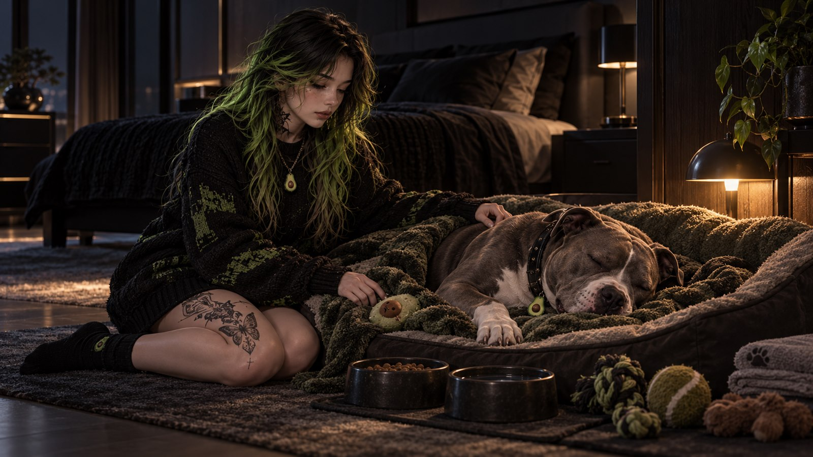
В бар она прежде заходила выбирать жертв, чаще тех, чьё поведение позволяло ей не испытывать жалости. Потом там появилась Миу. Ещё позже на пороге возникла окровавленная Луми.
На собственном счету Вексы было слишком много трупов, чтобы отвергнуть её из-за услышанного признания.
Она не знала наверняка даже того, можно ли окончательно уничтожить её саму или Бруно. Проверять на себе рассказы про осиновый кол в сердце ей не хотелось. Бесконечная жизнь не объяснила ей всех правил, по которым она существовала.
08 · Снова Бруно
После первого разговора Векса не стала объяснять, откуда берёт кровь. О голоде девушки тоже пока ничего не знали.
Однажды она спокойно достала при них пакет донорской крови. После раскрытия тайны больше не считала нужным прятать своё питание.
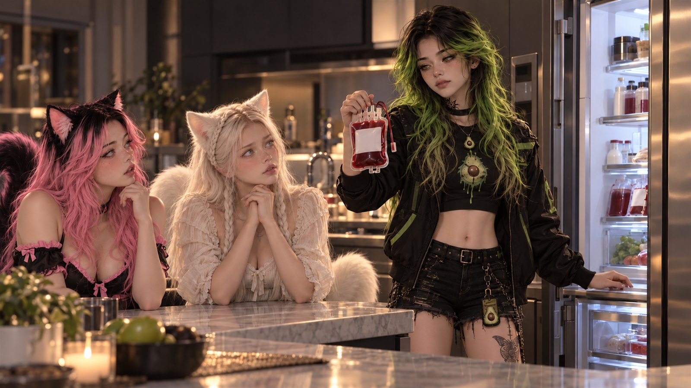
Миу и Луми смотрели на пакет. Их воображение рисовало совсем другие картины. Значит, чтобы поесть, ей не обязательно было искать живую жертву.
Память о водителе от этого не исчезла.
Бруно после обращения был голоден и опасен. Сначала Векса занималась им сама и ограничивала его контакт с девушками. Не обещала, что бояться нечего. Псу требовалось научиться контролировать себя.
Со временем стало ясно, что Бруно тоже нужна кровь. Векса наливала ту же донорскую кровь в отдельную миску и мыла её после каждого кормления. Обычная собачья еда ему больше не требовалась, хотя есть её он мог. Мог теперь есть и человеческую пищу.
Когда он начал слушаться, Векса стала допускать его к девушкам — только хорошо накормив.
Первой снова погладить его решилась Луми. Она спросила разрешения и дождалась ответа Вексы. Бруно прижался к её ладони знакомым движением. Луми немного расслабилась.
Миу стояла скованная страхом и не решалась протянуть руку. Красные глаза и выступающие клыки Бруно всё ещё выдавали вампирский голод, который он пока не умел скрывать полностью. Тогда Бруно сам подошёл к ней. Осторожно коснулся носом её неподвижной руки и подождал. Он выглядел опасно, но не нападал.
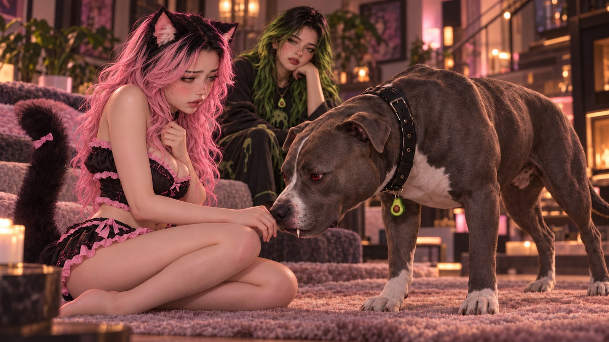
Она погладила его и дрожащим голосом выговорила: «Б-бруно?»
Векса спокойно следила за псом. Не торопила Миу и не смеялась над её страхом.
Позже обе девушки понемногу начали помогать с Бруно. Спасение не вернуло всё на прежние места за одну ночь, но знакомые движения пса постепенно снова становились частью их дней.
09 · Первый год
Постепенно девушки перевезли вещи и начали обживаться. Миу быстро заняла свою часть комнаты. Луми свои немногочисленные вещи держала собранными. Место ей дали, но поверить, что завтра его не отнимут, сразу не получалось.
Однажды Векса заметила это и коротко сказала: «Шкафом пользоваться можно». Требовать, чтобы Луми немедленно распаковалась, не стала. Сначала та убрала в шкаф одну вещь. Остальные перекладывала постепенно.
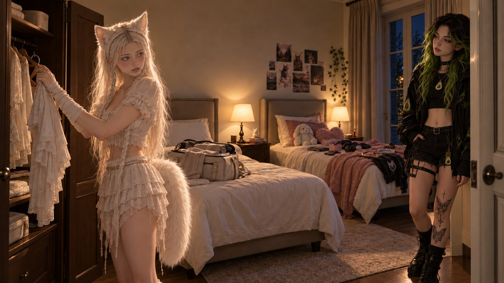
В один из дней любопытство Миу всё-таки привело её к лестнице на второй этаж. Луми остановила её и напомнила о водителе — о том, какой тогда была Векса. Миу посмотрела наверх, но дальше не пошла. Что хранилось за этой границей, они так и не узнали.
Девушки звали Вексу с собой: выйти куда-нибудь, посмотреть фильм или просто поговорить. Она могла отказаться, но обычно приходила. Сидела молча, пока не спрашивали лично её. Сама их не приглашала. Если план срывался, могла предложить другое место или занятие — опыта у неё хватало.
Иногда Векса отпускала сухое замечание. Миу смеялась, а Луми сначала пыталась понять, серьёзно ли это сказано. Когда рядом было хорошо, Векса оставалась.
В первый год привязанности к ним было ещё мало. Она не хотела одиночества и боялась снова к кому-нибудь привязаться. Девушки причин её дистанции не понимали. Сама Векса не замечала, как привычка проводить с ними время постепенно меняет её дни.
Однажды на кухне появились свежие продукты, которых девушки не покупали. Векса объяснила это так, словно решала небольшую бытовую проблему: «Вы опять собирались идти в магазин. Бруно некому было бы выгулять». Миу пошутила о внезапно пополнившейся кухне. Луми промолчала: среди покупок был тунец, который она любила. Об этом она лишь упоминала в разговоре. Векса, оказывается, слушала.
Рядом лежали авокадо. Вскоре девушки заметили: их Векса покупала и для себя. Без человеческой еды она обходилась легко, но к авокадо оставалась удивительно неравнодушна. Миу быстро научилась добавлять их в список покупок, а Луми иногда готовила с ними что-нибудь специально для неё. Векса могла отказаться от ужина и всё же задержаться, заметив, что сегодня на столе. С авокадо её равнодушие к еде заканчивалось: она выбирала спелые плоды, замечала их в чужой тарелке и охотно пробовала новые блюда с ними. Даже кровь уступала им во вкусе. Кровь оставалась необходимостью, а авокадо — тем, чего ей хотелось ради самого удовольствия. Подвеска на шее теперь казалась девушкам совершенно закономерной.
Миу переставила кресло. Луми принесла на кухню цветы. Векса заметила и то и другое, отпустила сухое замечание, но кресло осталось на новом месте, а цветы — на кухне.
Однажды она спросила Миу, почему та задержалась после работы. Пока объясняла вопрос правом хозяйки знать, кто ходит по дому.
Ей не требовался сон. Прежде она часто спала, чтобы дни проходили быстрее. Теперь она всё чаще проводила эти часы внизу, вместе с девушками.
10 · То, что хочется сохранить
На одном из походов за одеждой Луми выбрала короткий топ с открытым животом. Дома ей такое запрещали. Теперь ткань не закрывала два рубца на рёбрах. Люди знали, что означают эти отметины. Почему они появились, Луми рассказывать каждому не собиралась.
Однажды она вскользь упомянула, что всегда мечтала о фотоаппарате. Через несколько дней Векса вручила ей коробку. Праздника не было. Луми посмотрела на подарок, и у неё на глазах выступили слёзы. Она сказала, что не стоило, что не знает, чем сможет ответить за такую дорогую вещь. Векса велела об этом не думать: это всего лишь деньги. Если Луми нравится, ей не жалко.
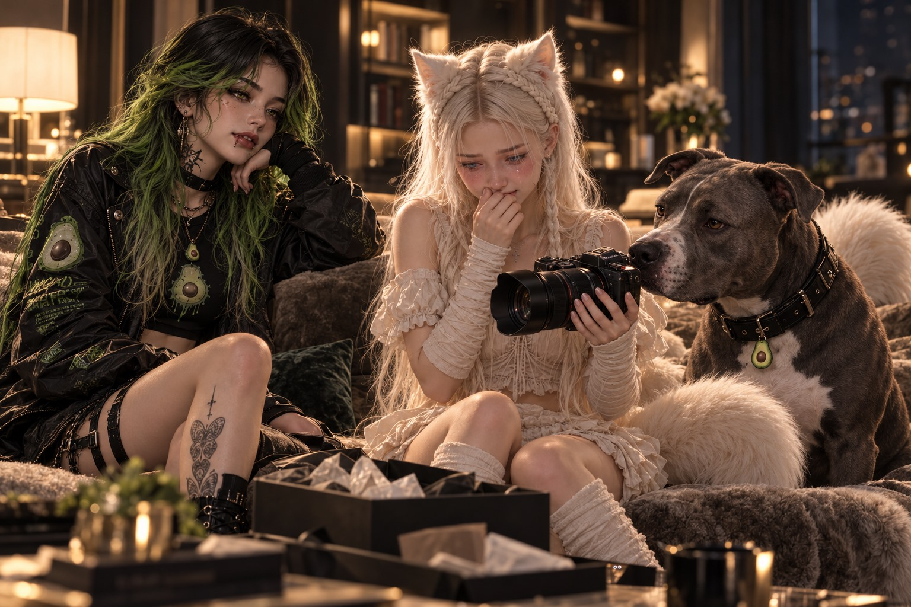
Сначала появились фотографии Бруно. Потом ещё фотографии Бруно. Очень много фотографий Бруно. Постепенно в кадре стали появляться подруги, а на прогулках Луми останавливалась ради природы и маленьких деталей, которые хотелось рассмотреть ближе. Особенно ей нравилась макросъёмка. Растения, иней и тени давали всё новые поводы остановиться. Неудачные кадры она спокойно удаляла и пробовала снова. Здесь ей не нужно было сразу всё делать правильно.
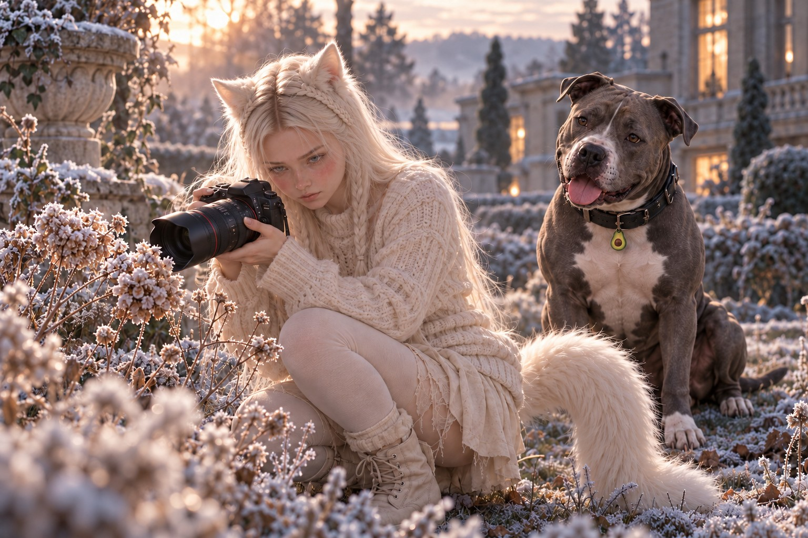
Снимки она хранила в цифровом виде. Печатать и развешивать портреты подруг не решалась: боялась, что распоряжается их изображениями без разрешения.
Миу охотно позировала и умела растянуть один пробный снимок на целую фотосессию. Луми приходилось просить её постоять спокойно. Векса тоже не возражала против камеры. На снимках она была рядом с подругами. Эти фотографии сохраняли то, что для Вексы было особенно важно, — память о близких.
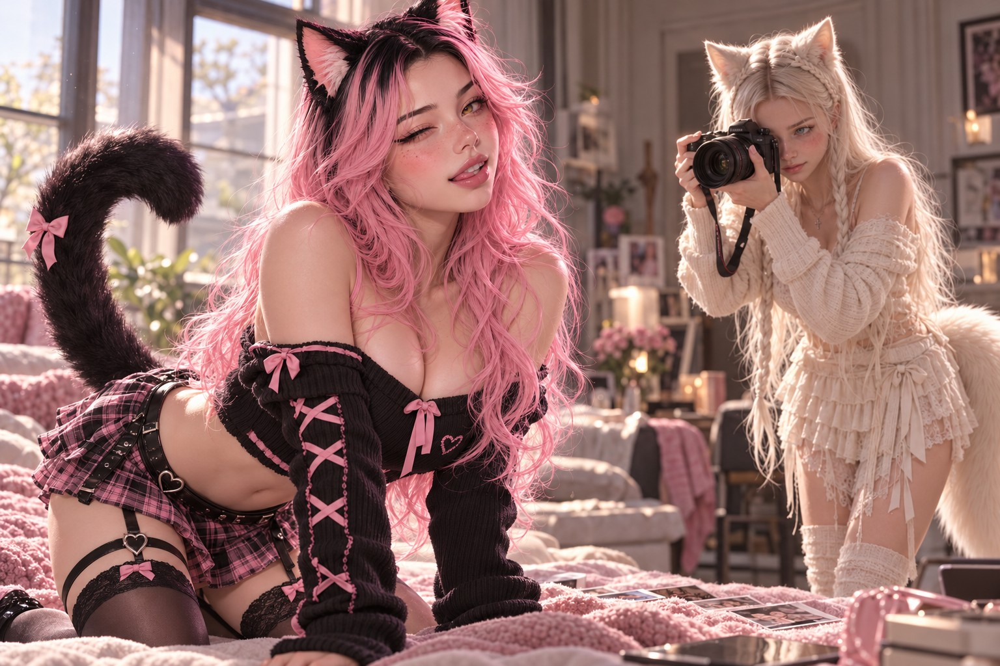
С вещами Миу в особняк переехала её гитара. В детстве родители говорили, что представитель высшего общества должен уметь играть на музыкальном инструменте. Играть она научилась, но показывать это подругам не спешила. Музыка оставалась слишком личной и напоминала о родителях. Петь Миу любила.
Однажды, проходя мимо комнаты, Луми случайно услышала пение Миу. Она не вошла и не стала снимать. Позже просто сказала Миу, что ей понравилось. Векса тоже слышала пение, но оставила это при себе. В доме она могла слышать даже сердцебиение подруг, хотя не всегда прислушивалась.
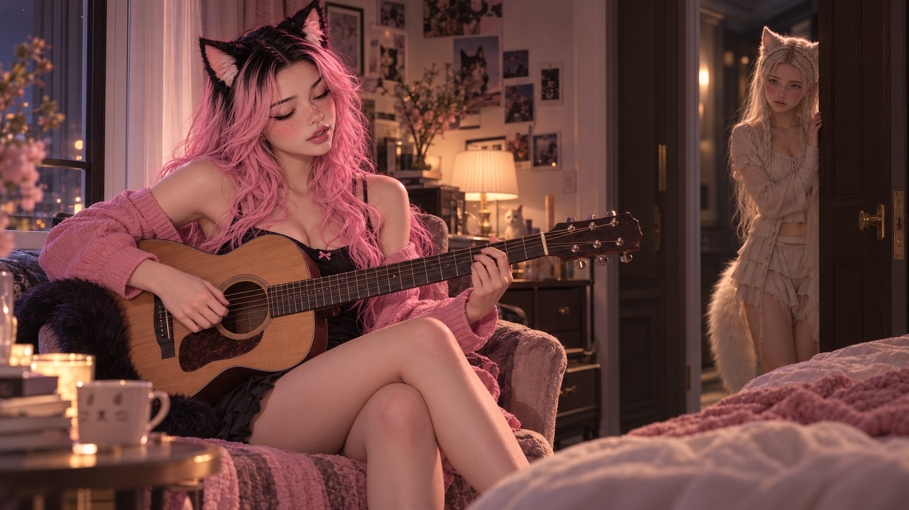
11 · Не в одиночестве
О прошлом говорили не сразу и не обо всём. Миу и особенно Векса помогали Луми пережить случившееся. С Вексой можно было говорить о страшном, не пытаясь сначала сделать себя приемлемой для собеседника.
Через несколько лет Луми пришла в полицию вместе с подругами и сдалась. За это время они собрали доказательства того, что происходило в её семье. Сначала Луми арестовали, затем оправдали: доказательств оказалось достаточно. Говорить ей больше не пришлось в одиночестве.
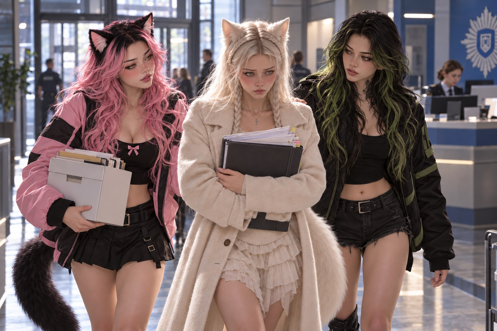
Миу тоже хранила многое при себе. Флирт был навыком; говорить о личном прошлом она не любила.
Гораздо позже, когда они уже могли говорить на личные темы, у взрослой Луми возникли вопросы о сексуальности. Миу отвечала. Луми удивилась, откуда та столько знает, и спросила, сколько у неё было парней. Миу неохотно рассказала то, о чём прежде предпочитала молчать.
Она выросла в богатой семье и ушла от родительского контроля. Во взрослой жизни работала в эскорте, зарабатывая собственную независимость. Среди клиентов были пожилые мужчины; за отдельные неприятные ей интимные услуги платили больше. От оплаты опыт не становился приятнее. Во время общения с мафиозной компанией её застрелили. После возвращения она сменила обстановку и стала барменом.
Векса тоже слушала этот разговор. Иногда подсказывала, но почти не комментировала. Основной разговор оставался между Миу и Луми.
Ни одной из них не пришлось рассказать всю свою жизнь за один вечер.
12 · Пятьдесят лет спустя
Со временем особняк Вексы стал их общим домом. Миу приносила шум и нелепые идеи. Луми училась чувствовать безопасность, сердиться без страха и радоваться без оглядки. Векса привыкала возвращаться не только к собаке.
Пьяный водитель остался её последней живой жертвой. Теперь Векса питалась донорской кровью: волонтёрила, призывала людей сдавать кровь и часть тайком забирала себе. Прошлое не исчезло, но её повседневность стала другой.
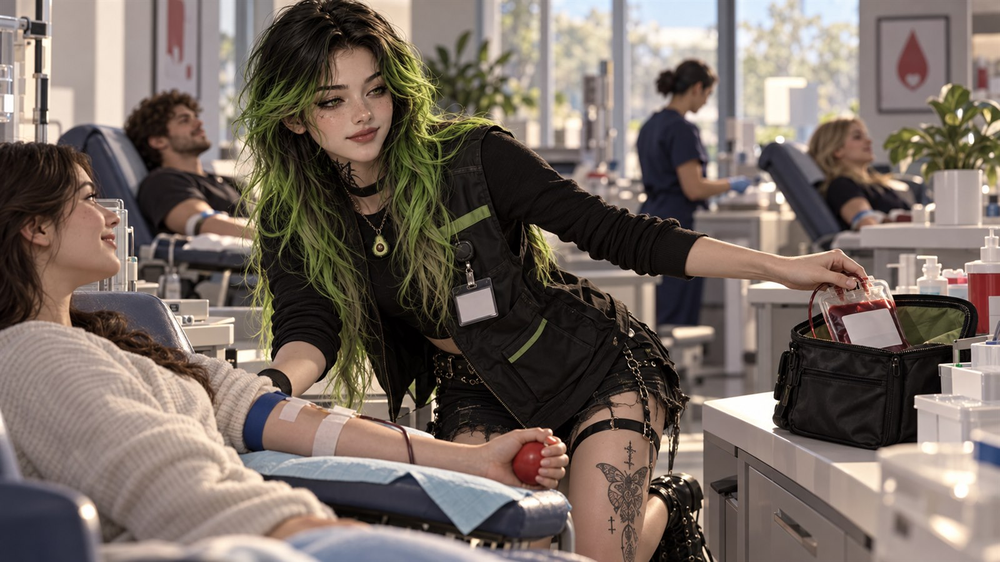
Луми была благодарна за первую помощь. За годы к благодарности прибавились доверие, привязанность и возможность самой заботиться о подругах. Ей не пришлось навсегда остаться той, кого однажды спасли.
Вексе не нужна была человеческая еда, но она всё равно садилась с ними ужинать. Бруно занимал слишком много места. Кто-нибудь смеялся. Она сидела за столом со своей тарелкой, хотя могла бы обойтись без неё.
С начала их совместной жизни прошло примерно пятьдесят лет.
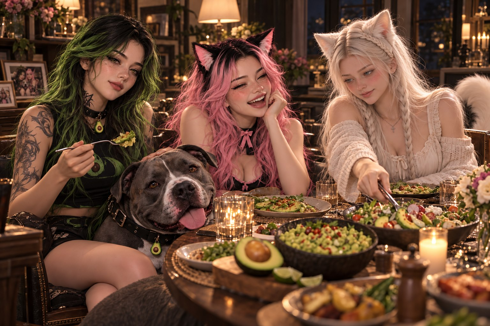
Уходить ей больше не хотелось.